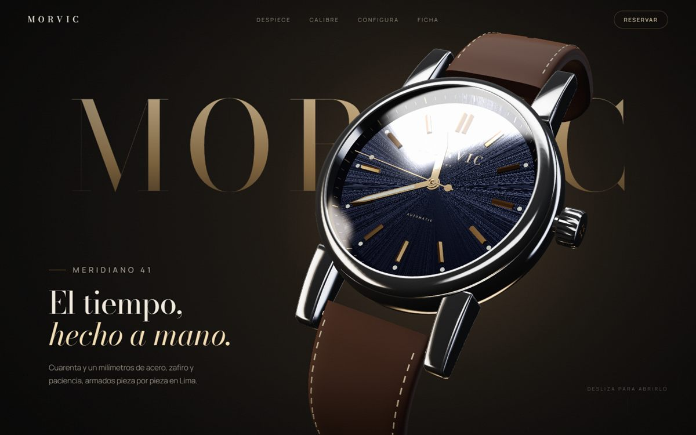
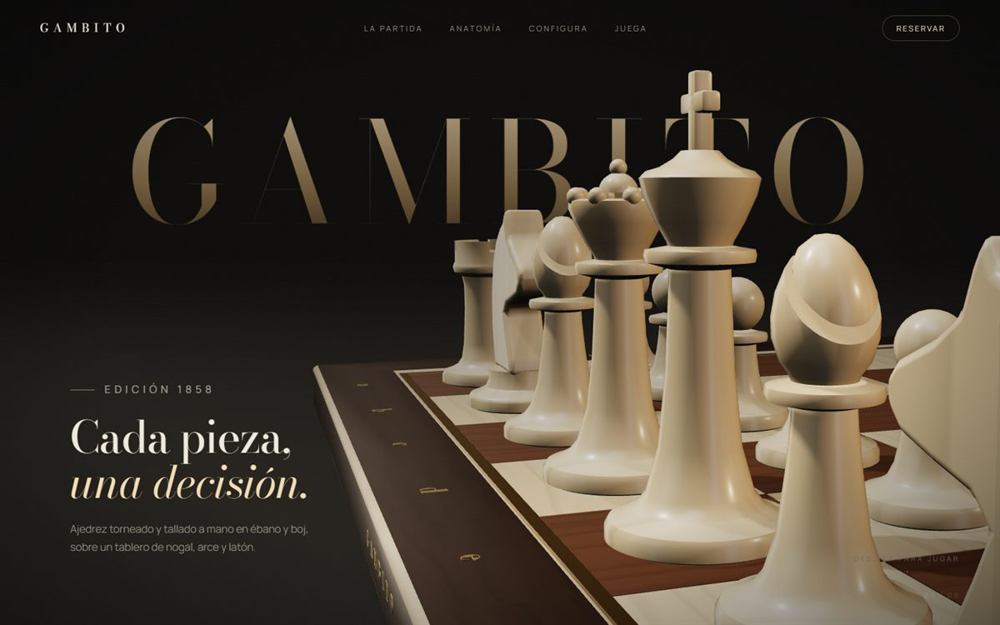

Blender × Three.js
Dos objetos.
Dos historias.
Productos modelados por código en Blender que se cuentan solos con el scroll: se desarman, se iluminan, se configuran y se pueden tocar.

Morvic
Un reloj automático que se despieza capa por capa: esfera de rayos de sol, lume en la oscuridad, calibre con engranajes en movimiento y configurador en vivo.
Abrir landing →

Gambito
Un ajedrez esculpido a mano: el scroll juega la partida de la Ópera de Morphy (1858), el rey cae en el mate y al final puedes jugar contra una IA.
Abrir landing →